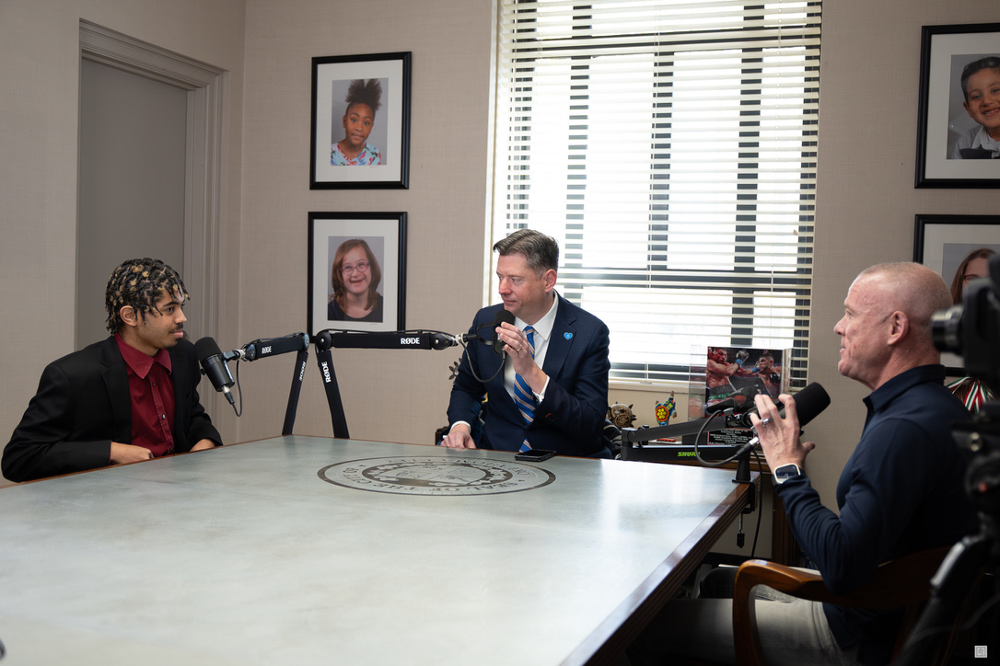

FROM POLICY TO PEOPLE: MAYOR DAVID HOLT ON LEADERSHIP, YOUTH, AND OKLAHOMA CITY
This conversation brings together Mayor David Holt, student host Jordan Arnett, and Jed Chappell for a thoughtful discussion about civic leadership, long-term vision, Oklahoma City’s growth, and why productive pathways for young people matter.